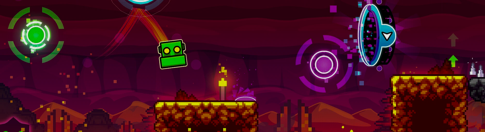

Geometry Dash — это динамичная аркадная игра в жанре платформера,
разработанная Робертом Топала (известным под псевдонимом RobTop). Она впервые
вышла в 2013 году для мобильных платформ, а позже стала доступна и
на ПК через Steam.

Долгое время фанаты ждали крупное обновление 2.2, которое добавляет
новые механики, графику и улучшения. Оно стало своеобразной"легендой" из-
за долгой разработки и ожидания.